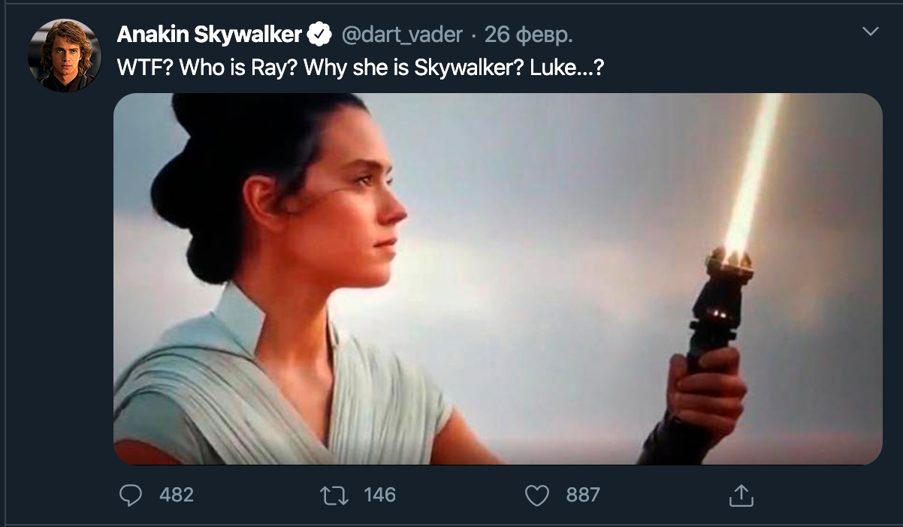

(!) Домашние задания нужно сдавать в виде странички на GITPAGES.
Видео о том как сдавать ДЗ
Тут инструкции как это сделать с реактом
Задание Basic:
- С помощью react-router добавьте 2 страницы в ваше приложение.
(/users, /addUser )
Предусмотрите меню для перехода на каждую из страниц.
Меню должно быть доступно с любой страницы.
- Выведите список всех твитов на страницу /users. Стилизацию можете взять из своих прошлых заданий.
-
На странице /addUser добавьте форму для создания нового пользователя.
Форма должна быть связана с redux по аналогии с вашим прошлым домашним заданием.
Форма содержит 3 поля: имя пользователя, username (всегда начинается с @), ссылка на аватар. (Именно
ссылка, ссылки можно искать в гугл картинках).
-
Подключите с помощью
redux-thunk вашу форму по добавлению нового пользователя из
предыдущего пункта к серверу.
(Документация ниже)
Задание Advanced:
-
Добавьте ещё 2 новых страницы в ваше приложение (/tweets , /addTweet)
- Выводите все твиты на отдельной странице вашего приложения (/tweets).
- При получении твита, вы получаете userId, вам необходимо сопоставить userId с соответствующим твитом и вывести информацию примерно как на скриншоте.
Поля которых у вас нет от сервера можете игнорировать (дата/комменты/лайки/репосты и т.д)
(Дизайн можете брать из предыдущих ДЗ)
-
Добавьте форму создания нового твита и подключите её к серверу.
Форма должна содержать такие поля: контент, выбор пользователя из выпадающего списка (получаете список пользователей с сервера) и изображение.
-
При подключении формы к серверу вы должны отправлять: userId, content, image. ВСЕ ПОЛЯ ОБЯЗАТЕЛЬНЫ.

Документация по REST API сервера
-
Имя хоста с которым вы взаимодействуете: 77.120.108.119:9999
-
Создание пользователя: POST --- /users/. Параметры: name(string), username(string), avatar(string)
-
Получение всех пользователей: GET --- /users/
-
Создание нового твита: POST --- /tweets/. Параметры: userId(number, обязательно из существующих юзеров), content(string), image(string)
-
Получение всех твитов: GET --- /tweets/